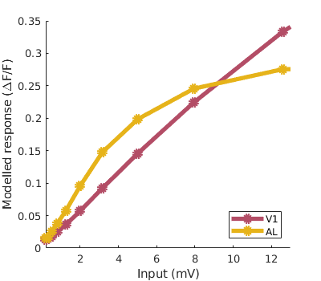

This is the readme for the MATLAB models associated with the paper:
Meijer G, Marchesi P, Mejias J, Montijn, J, Lansink, C, Pennartz C (2020) Higher-Order Visual Cortex Shows Stronger Neural Correlates of Visual and Multisensory Detection Behavior Compared to Primary Visual Cortex Cell Reports doi:10.2139/ssrn.3414701 Please run the codes main1.m and main2.m to obtain, respectively, Fig. 3b and 3c/d. main1.m produces (in about a minute):  main2.m quickly producesAll code, unless specified otherwise, developed by Jorge Mejias.
This code is for personal use only, and it is aimed at providing help in reproducing the modeling results of Meijer et al. 2020. If something in it is unclear, please go to the original publication and supplementary material, or contact the author Jorge Mejias at j.f.mejias@uva.nl